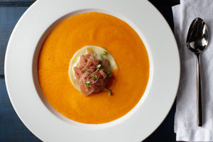
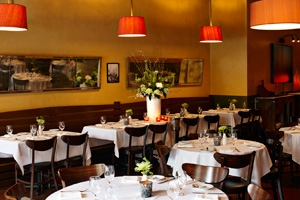
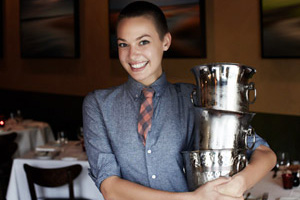
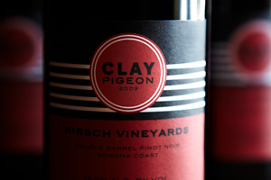

Our approach is simple. We have a passion for pure flavor, quality ingredients, and for creating an atmosphere that is convivial, approachable, and a haven for people who simply love food.
menu
 We work with our local farmers, growers and purveyors to source products with integrity, flavor and soul, and incorporate these seasonal offerings into our menus nightly. The result is food that is honest, straightforward and pays homage to the bounty of the Lowcountry region we are so privileged to call home. Using ingredients at their peak and preparing them minimally and with respect allows us to capture the essence of the season and bring it straight to your table.
SETTING
 Laid-back, eclectic and unpretentious, FIG is one part retro diner, one part neighborhood cafe, and one part elegant bistro. Warm hues, soft lighting and an unexpected quirkiness encourage guests to settle in, get comfortable, and have a great time.
SERVICE
 The FIG experience is about more than just food. A sincere effort to educate our staff on all aspects of food and wine culture is the basis for our service philosophy. The welcoming staff at FIG goes to great lengths to make diners feel at ease, comfortable and well taken care of.
WINE
 Our value-driven wine list features 100 bottles under $100. Our wines, like our food, are never static and change with the seasons. Labels range from interesting newcomers to Old-World classics from small-production winemakers who put as much love and care into their wines as we put into our food.